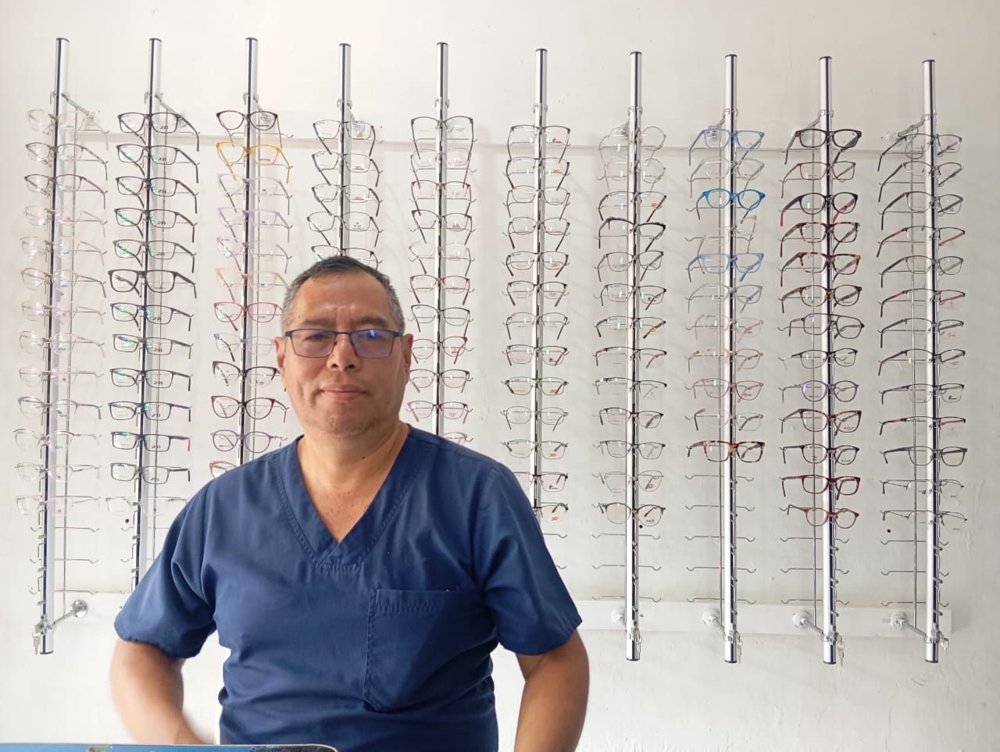

<section class="seccion-empresario-full">
  <div class="empresario-container">
    
    <div class="empresario-grid">
      <div class="empresario-img-column">
        
      </div>

      <div class="empresario-text-column">
        <h3 class="empresario-heading">2. OPINIÓN DEL NEGOCIO SEGÚN EL DUEÑO</h3>
        
        <h4 class="empresario-subheading">• Opinión del negocio según el dueño</h4>
        <p>
          El dueño de Grupo Óptica Prisma considera que el negocio ha crecido gracias a la experiencia adquirida, la adaptación a los cambios del mercado y el compromiso de brindar un buen servicio, aunque reconoce que aún existen retos, cree que la empresa avanza hacia una etapa de mayor consolidación y crecimiento.
        </p>
        <p>
          También afirma que la atención personalizada es el principal diferenciador de la óptica, para él, la confianza y la fidelidad de los clientes son la razón por la que el negocio ha logrado mantenerse frente a la competencia. Además, considera que la publicidad sigue siendo importante y tiene planes de invertir en radio y redes sociales para atraer nuevos clientes.
        </p>

        <h4 class="empresario-subheading">• Análisis, síntesis e interpretación del grupo</h4>
        <p>
          Como grupo, interpretamos que Grupo Óptica Prisma ha logrado posicionarse gracias a la calidad de su servicio y a la confianza que ha construido con sus clientes, la entrevista refleja que el propietario tiene una visión clara del negocio y busca mejorar constantemente para mantenerse competitivo.
        </p>
        <p>
          Además, consideramos que el dueño tiene una actitud positiva hacia la publicidad y la inversión en comunicación, aunque el negocio ha crecido principalmente por recomendaciones, reconoce que es necesario utilizar otros medios para llegar a más personas, esto demuestra que entiende la importancia del marketing como una herramienta para fortalecer el crecimiento y el posicionamiento de la empresa.
        </p>
      </div>
    </div>

  </div>
</section>